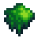

Moss
This page or section contains unmarked spoilers from update 1.6 of Stardew Valley. Players may want to avoid or be cautious toward reading this article/section. |
| Moss | |
|  | |
| A special type of plant that grows in shady areas. | |
| Information | |
| Source | |
| XP | 1 Foraging XP |
| Sell Price | |
Moss is a resource obtained from moss-covered trees. Each day in Spring, Summer, and Fall, some amount of common trees can randomly grow moss after certain time. Moss grows slower on Sunny Summer days. Additionally, two types of Green Rain Trees can grow Moss. Moss growth is accelerated for these two trees, and when covered in moss and planted near common trees accelerate moss growth on the common trees. [1] The trees do not need to be felled to collect the Moss. Moss can be removed and collected with any tool, weapon, or bomb. One Tree drops 1 to 2 pieces of Moss.
Players can use Vinegar on a tree to prevent that tree from growing Moss.
Using an Axe on a tapped tree covered in Moss will remove the Tapper and the Moss in one hit, while a Pickaxe will remove only the tapper on the first hit. Using any other methods will harvest moss without collecting the tapper.
Moss becomes much more common during the Green Rain event, covering most mossy trees. This weather event also spawns exclusive weeds that have a 10% chance to drop Moss.[2] Additionally, Large Weeds spawned by the event will drop 2-3 Moss when cut.[3]
Each Moss collected gives the player 1 Foraging XP.
Moss Growth
For moss to grow on a tree, it must be a fully grown Oak Tree, Maple Tree, Pine Tree, or Green Rain Tree Type 1 or 2.[4] No other types of trees can grow moss. The tree's growth stage must also be at least 14.
At the start of each day, all eligible trees will have a chance to grow Moss. The chance for a tree to grow moss varies depending on the weather and season. The growth chance is 10% on Sunny days, which decreases to 3.3% if it is Summer. On Rainy days, the growth chance is 20%.[1]
Trees will have a 50% chance to receive a 10% boost to their moss growth chance if one of the following conditions are met:
- The tree is a (non-temporary) Type 1 or Type 2 Green Rain Tree.
- The tree's surrounding 5x5 grid contains a (non-temporary) Type 1 or Type 2 Green Rain Tree that has Moss on it.
During a Green Rain, all trees that are able to grow Moss will instantly grow Moss, regardless of their growth stage.
During Winter, Moss cannot grow at all (except inside the Greenhouse), and all pre-existing Moss on trees is removed.
Collecting moss from a tree reduces its growth stage to 12 - the amount of Moss it dropped.
Gifting
| Villager Reactions
| |
|---|---|
| Dislike | |
Bundles
Ten Moss may be chosen as one of the options for the  Forest Bundle in the Crafts Room (Remixed).
Forest Bundle in the Crafts Room (Remixed).
Crafting
| Image | Name | Description | Ingredients | Recipe Source | Sell Price |
|---|---|---|---|---|---|
| Speed-Gro (5) | Stimulates leaf production. Guaranteed to increase growth rate by at least 10%. Mix into tilled soil. | ||||
| Mushroom Log | Grows mushrooms every so often. The more wild trees are nearby, the better it works. | Cannot be sold | |||
| Statue Of Blessings | Touching the statue gives a unique blessing every day. | Cannot be sold | |||
| Deluxe Worm Bin | Produces Deluxe Bait on a regular basis. The worms are self-sufficient. | Cannot be sold | |||
| Deluxe Bait (5) | Causes fish to bite even faster and increases size of the "fishing bar". | ||||
| Challenge Bait (5) | A "perfect" catch yields triple the fish. However, each time a fish escapes the "fishing bar", the catch is reduced. | ||||
| Treasure Totem | Use on diggable terrain to summon a ring of treasure spots. | ||||
| Blue Grass Starter | Place this on your farm to plant a clump of blue grass. |
Cooking
| Image | Name | Description | Ingredients | Energy / Health | Buff(s) | Buff Duration | Recipe Source(s) | Sell Price |
|---|---|---|---|---|---|---|---|---|
| Moss Soup | It's thick and slimy, but edible. | N/A | N/A |
Tailoring
Moss is not used in any tailoring. Moss is a green dye when used in the spool of the Sewing Machine with a dyeable clothing item in the feed. It can be placed in the green dye pot at Emily's and Haley's house for use in dyeing.
Quests
10 Moss may be requested by the Raccoon at the Giant Stump.
Trading
Once unlocked, the Raccoon's wife at the Giant Stump will trade for Moss.
| Image | Name | Description | Price | Requirements |
|---|---|---|---|---|
| Broccoli Seeds | Plant in the fall. Takes 8 days to mature, and continues to produce after first harvest. | 1st Request Completed |
References
History
- 1.6: Introduced.
- 1.6.3: Harvesting moss grants 1 Foraging XP per moss collected. Now grows slower on Sunny Summer days and recovers slower after collecting. Adult mossy green rain trees now boost the moss growth rate of nearby trees.
- 1.6.4: Can now use Vinegar on a tree to prevent Moss from growing on it.
| Resources | |
|---|---|
| Basic | Battery Pack • Bone Fragment • Cinder Shard • Clay • Coal • Fiber • Hardwood • Moss • Stone • Wood |
| Ore | Copper Ore • Iron Ore • Gold Ore • Iridium Ore • Radioactive Ore |
| Bars | Copper Bar • Iron Bar • Gold Bar • Iridium Bar • Radioactive Bar • Refined Quartz |